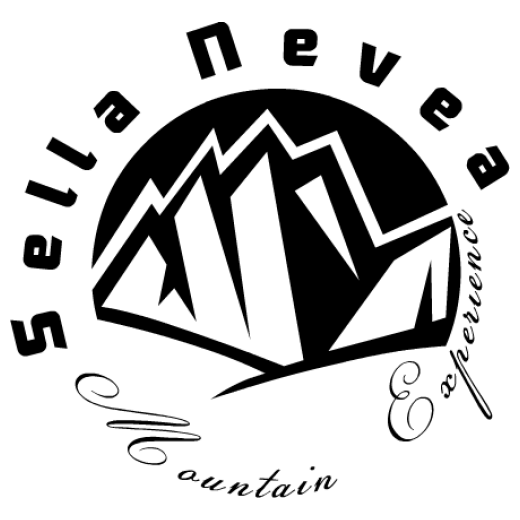

Neve, temperatura e vento
Stazione automatica della Protezione Civile FVG al Livinal Lunc (1837 m), versante nord del Canin sopra il Rif. Gilberti. Dati ogni 15 minuti, non validati.
Meteo e neve prevista
Pericolo valanghe
Webcam
Panorami a 360° aggiornati ogni pochi minuti. Trascina per girare la vista.
Webcam © Panomax / PromoTurismoFVG.
Mappa delle discese
Video
Video pubblici su YouTube – rider, scuole, TV ed enti turistici – come esempio di linee e condizioni. Tutti i diritti ai rispettivi autori.
Corsi e uscite guidate
Vuoi imparare a leggere la neve o scoprire le linee con qualcuno che conosce il Canin da sempre?

Sella Nevea Mountain Experience
Livio vive a Sella Nevea dal 2008 ed è maestro di sci dal 2013. Accompagna piccoli gruppi fuoripista sul Canin, tra Sella Nevea e Bovec, alla ricerca della neve migliore. Nei corsi si impara anche a leggere la neve e il terreno e a usare ARTVA, pala e sonda.
- Giornate freeride
- Corso freeride adulti
- Freeride ragazzi
- Tecnica fuoripista per scialpinisti
- Ski Bike Rafting
✉ sellaneveamountainexperience@outlook.it


Foto: Sella Nevea Mountain Experience
La community
Uscite di gruppo, foto, video e condizioni in tempo reale dai rider di Sella Nevea.

Hotel Canin
Ski & Spa Resort a 1190 m, direttamente sulle piste accanto agli impianti.